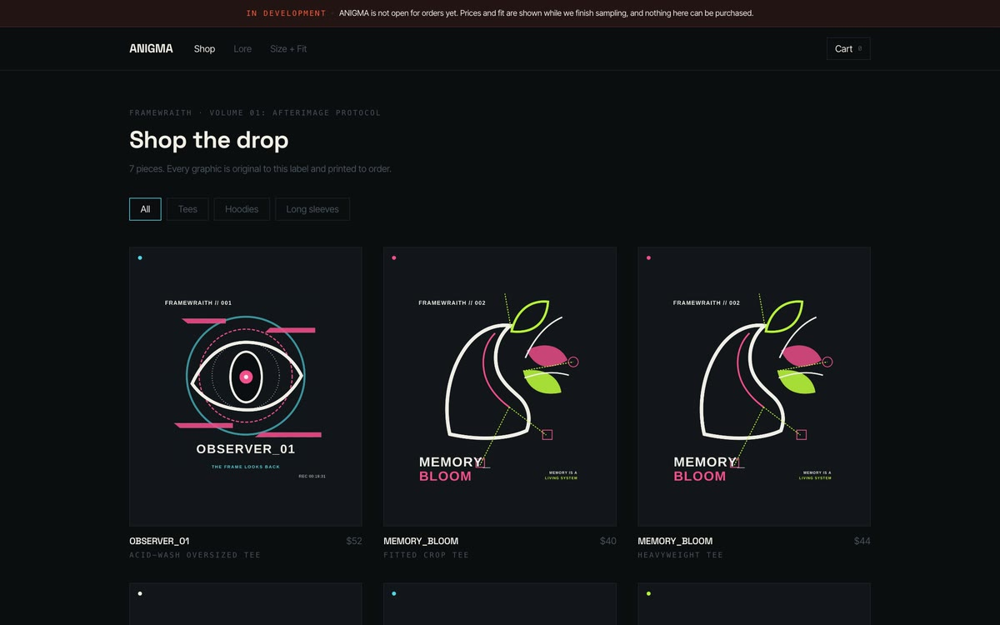

Dharma AI
Агентные системы и их проверка · проектное участие
Сергей Гостов / AI-продукты, игры, системы
От агентных систем до игровых миров. Здесь можно увидеть настоящие экраны, открыть работающие проекты и понять, какую задачу каждый решает.
Избранная работа
Показываю не только красивый экран: что работает, для кого это сделано и куда нажать, чтобы проверить самому.
Шлюз для работы AI-помощника с локальными инструментами. Видно, что система сделала, что ей разрешено и как прошла проверка.
Открыть демонстрацию ↗На снимке — настоящий экран проекта.

Редактор метаданных снимков, который можно попробовать в браузере.

AI-помощник для сайта центра: отвечает на вопросы по утверждённым материалам.
Рабочие инструменты, образовательные продукты и открытые демонстрации.
AI/LLM QA · PythonLocal Agent GatewayПрограмма-посредник: подключает обычное приложение к нейросети, которая работает прямо на компьютере — без интернета и без отправки данных наружуv0.3.0
03 Практикум · веб + PDFПрактикум: тестирование локального AI-агентаПошаговое руководство: как поднять нейросеть у себя на машине, подключить к ней программу и убедиться, что всё работаетv3
04
Практикум · веб + PDFПрактикум: тестирование локального AI-агентаПошаговое руководство: как поднять нейросеть у себя на машине, подключить к ней программу и убедиться, что всё работаетv3
04 Практикум · веб + сервисПрактикум: настройка LLM и агентовРазбираю на живом примере, как устроен ИИ-агент: чем он пользуется, что помнит и как проверить, что он не выдумываетоткрыт
05
Практикум · веб + сервисПрактикум: настройка LLM и агентовРазбираю на живом примере, как устроен ИИ-агент: чем он пользуется, что помнит и как проверить, что он не выдумываетоткрыт
05 Квест · PythonQueQuestВирусы лезут в компьютер, а ты оказываешься внутри защиты. Потом возвращаешь способности через настоящий Python и передаёшь машине только разрешённую работуальфа
06
Квест · PythonQueQuestВирусы лезут в компьютер, а ты оказываешься внутри защиты. Потом возвращаешь способности через настоящий Python и передаёшь машине только разрешённую работуальфа
06
Продукт заказчикаDharma AIСобрал магазин, которым управляют ИИ-агенты: помощник доводит покупателя от вопроса до оплаченного заказавалидатор запущен 07Продукт · демоPsy AI AdminПомощник на сайте психологического центра: отвечает на вопросы посетителей и ведёт на нужную страницу, а где нужен живой человек — так и говоритMVP-демо
08Продукт · local-firstФотоДата · Photo Meta EditorМеняет дату съёмки сразу у пачки фотографий и видео. Работает в браузере: файлы никуда не уходят с вашего устройстваv1.2.0
09Самохостинг · WebRTCВоки-ТокиВидеозвонки на своём сервере: работают внутри домашней сети, даже когда интернета нетработает
10Бот · TelegramБуддийский дневникШесть ежедневных осознанных отметок, личные записи и циклические списки практикработает
Собираю сценарии, интерфейсы, инструменты и проверку в работающий продукт. Санкт-Петербург · удалённо.
Агентные системы и их проверка · проектное участие
Автор и архитектор · интеграция приложений с локальными LLM, QA-стратегия, CI и релиз
Международный образовательный проект · мультимедиа и AI-инструменты · самозанятый
Геймдизайнер / Project Manager / креативный руководитель
Открыть кейс VitalSchool ↗Первая публикация: обзор на Resistance: Fall of Man
агентные сценарии · интеграция LLM с приложениями · локальные и облачные LLM · RAG и проверяемые источники · инструменты и allowlist · память сессий · structured output · local-first и приватность
AI/LLM QA · оценка точности ответов · поиск галлюцинаций · пограничные сценарии · сравнение моделей · LLM evaluation · human feedback / evaluation · рубрики оценки · обоснованные рецензии · prompt-injection canary · API / E2E / негативные проверки · CI и Allure
Python · JavaScript · FastAPI · REST API · pytest и httpx · Playwright · Node.js test · Docker/Compose · GitHub Actions
продуктовые сценарии · безопасные границы ассистентов · технические требования · удалённая эксплуатация · Vercel · удалённые рабочие станции · безопасные каналы доступа · проверка результата · демо и приёмка · образовательные продукты · креативное руководство команды
НГТУ, АВТФ · прикладная математика и информатика, 2010–2017